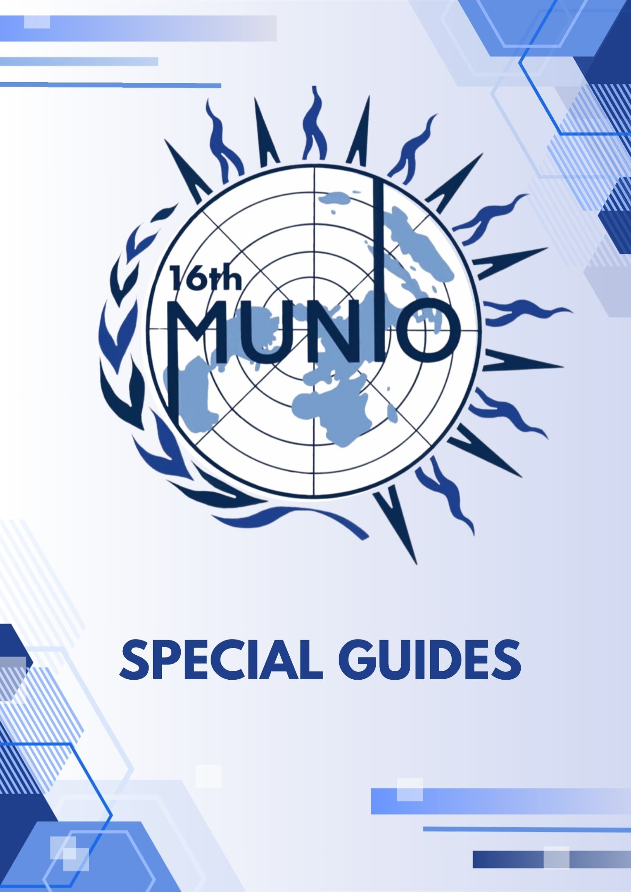

☰
☰

Model United Nations (MUN) is an academic simulation where students take on the role of diplomats, representing different countries and debating global issues.
This guide is designed for new and experienced delegates who want to understand procedures, improve their performance, and make the most out of every conference.
Explore the resources, select your language, and start learning step by step.